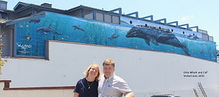

While traveling to San Diego we wanted to drive through Laguna Beach, as we knew there were several walls we could see there. We hoped these walls would be easy to find, given some of our experiences. Fortunately, they were.
We first found Laguna Coast which is on the side wall of a very cool store that’s definitely worth stopping in. If you’ve never tried to lift a meteorite this is your chance. This wall is not the original one and has been re-painted on tiles which will hopefully allow it to last much longer than the original.
2171 Laguna Canyon Road
Laguna Beach, California
20 Feet Long x 24 Feet High
Dedicated February 2nd, 1987
Tiled 1996
Excerpt from @wylandfoundation on Instagram
“Laguna Coast” features a gray whale spyhopping. Whales will poke their heads above the surface in order to get a better view of their surroundings. As whale watchers, this is one of the more exciting things to see while out on the water. The others being a breach and whale slap!
This mural was painted in 1987 on the side of his original studio gallery in Laguna Canyon, before the move to his flagship gallery on PCH. The location is now home to Laguna Classic Cars & Automotive Art, a very appropriate company with ties to Michigan!
Wyland says “What I wanted to do is leave an impression about the Laguna coast and its fantastic marine life, including whales and the many different kinds of birds. The wall is painted in a way that you can’t ignore it.”
The coolest thing about “Laguna Coast” is the person who dedicated it! His mom, Darlene, whom we all love and respect for her kindness and support of the art career of her son…and all of her boys!
From there we headed into the town to see the wall on the side of the Wyland store in Laguna. It was exciting to see the location of wall #1 where it all started although the current wall seems very different from the original. This wall has actually been painted 3 time (well 3 times I know of). The first wall covered the portion that is now white with the whales facing away from the ocean. The second time it covered both the top and the bottom of the wall and the whales faced the ocean. The third time is the current incarnation where the whales again face away from the ocean. The current wall resembles the original wall more but is on the higher wall, away from the cars.

Somehow, we managed to forget about the ceiling of the store (even though we managed to spend quite a bit of time there) and left without a picture of #68. Goes to show that lack of planning leads to missed opportunities.
Excerpt from @wylandfoundation on Instagram
Wall #1…in Laguna Beach, which was recently recreated and expanded! Here is a quote from the Orange County Register: “Wyland’s hand moved swiftly, adding vibrant color to the kelp in his 130-foot-long masterpiece, the ocean glistening just a short distance away. The artist thought back to when he first stood at this spot in Laguna Beach off South Coast Highway, 38 years ago, creating his very first Whaling Wall, one that would inspire 99 more massive murals set on buildings and walls around the world. It was his 25th birthday when he painted this wall on the Hotel Laguna property. At the time, it was meant to be his one and only. This mural has special meaning not just because it was the start of what would become a lifetime effort making his marine mark around the world – but because he’s been waiting patiently for decades to give a piece of his art back to Laguna Beach after the mural was destroyed.”